This exam covers ecosystems, chemistry and coordination and control. (Ecosystems is no longer a separate topic in the course, but the questions are still good revision.) Question numbers in Section B follow the original paper.
Data page: periodic table.
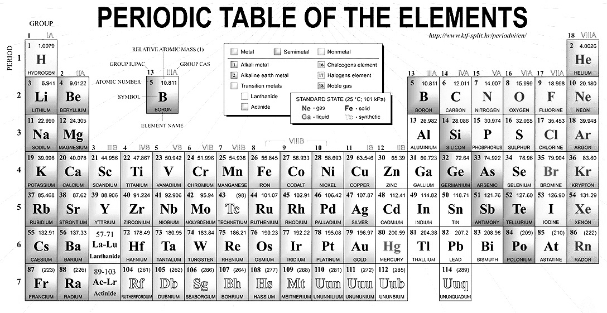
Section A: Multiple choice (30 marks)
Ecosystems
What is an ecosystem?
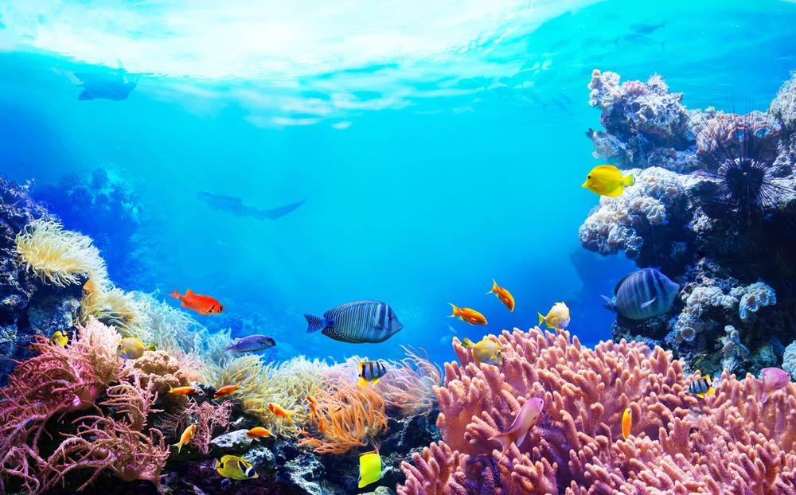
What would be a biotic factor found in a coral reef?
Which statement correctly refers to secondary consumers in an ecosystem?
Questions 4 and 5 refer to this food web.
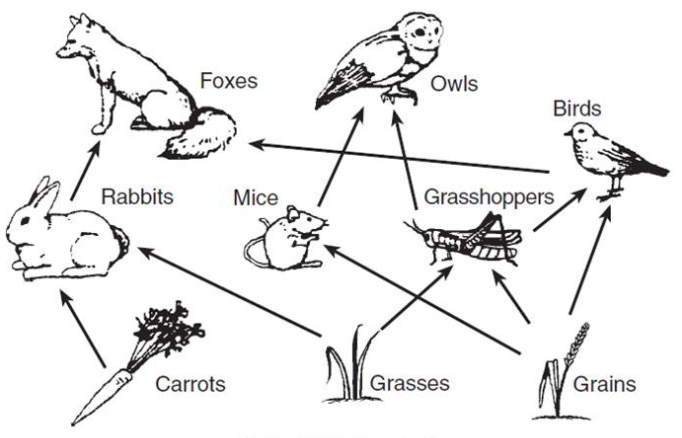
Which statement is true, based on this food web?
Energy is lost at each trophic level. Approximately how much energy is passed on to each trophic level?
The abiotic factors affecting seaweed on Australia's rocky shores would be:
Predators, parasites and symbiotic animals are living (biotic) factors.
Which organelles are common to all living things?
Bacteria have no nucleus or mitochondria, but every cell has a plasma membrane, cytosol and ribosomes.
Which bacteria live in the root nodules of pea plants and convert atmospheric nitrogen into ammonia?
Which is an accurate comparison between cellular respiration and photosynthesis?
Bioaccumulation is the build-up of a contaminant, such as DDT, inside organisms; it becomes more concentrated at higher trophic levels. DDT concentrations (ppm): needlefish 4.9, minnow 0.64, macrophytes 0.02, pickerel 1.25, cormorant 26.4. Which food chain is most accurate?
Chemistry
The total number of atoms in C12H22O11 is:
An atom contains 13 neutrons, 9 protons and 10 electrons. What is its atomic number?
The mass number of an atom is best defined as:
Carbon has three isotopes. What are isotopes?
Which of the following is likely to be a halogen?
An element has 5 electrons in its second shell. The element is:
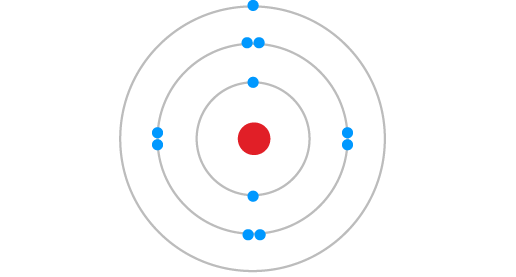
When the atom above reacts to form an ion, the charge of the ion would be:
The electronic configuration of S2− is:
Sodium (atomic number 11) reacts vigorously with water. Which element would have similar properties?
What would be the most reactive non-metal?
Coordination and control
What is a good definition of diffusion?
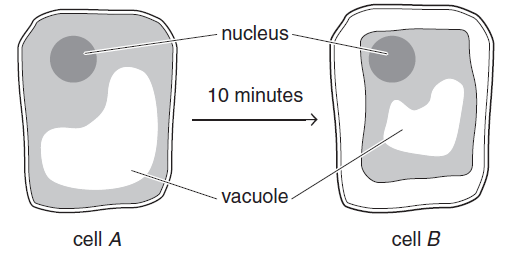
Plant cell A was placed in a solution for ten minutes, becoming cell B. The change in appearance is due to:
Which shape, each with a volume of 12 cm3, has the greatest surface area to volume ratio (height × width × length)?
Surface areas: 50, 40, 38 and 32 cm2, so the long thin shape has the largest SA:V.
Which type of neuron transmits an impulse from the central nervous system to an effector?
Which part of the brain controls higher-order thinking, emotions and memory?
A footballer is knocked on the head and can't keep his balance. Which part of the brain is likely to be damaged?
Which statement about hormones is false?
A drop in the external temperature lowers a person's internal temperature. Which response brings the body temperature back to normal?
On Year 9 camp, a student stands on a sharp stick and his foot is withdrawn in a reflex. In what order are the three neurons involved?
Which statement is false?
Section B: Short answer (60 marks)
Ecosystems: Question 1
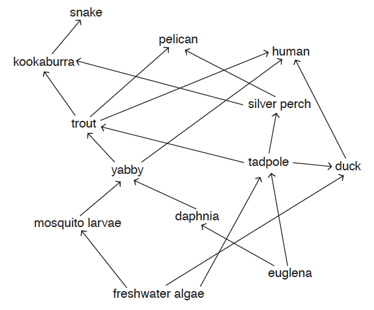
Identify all of the producers in the food web.
Freshwater algae and euglena.
What trophic level(s) does the duck occupy in this food web?
Primary consumer and secondary consumer.
Write a food chain of 4 organisms that includes ducks.
For example: freshwater algae → tadpole → duck → human.
What is the original source of energy in this food web?
Sunlight (light energy from the Sun).
Identify two ways in which energy is lost at each stage of a food chain.
Any two: heat from respiration; waste (faeces and urine); death of organisms that are not eaten; energy used for movement and growth.
A company illegally dumps chemical waste into the water, greatly reducing the number of tadpoles. Discuss the short-term effects on the food web, including two different species.
Freshwater algae and euglena will increase in number, as fewer organisms are eating them (1 mark). Silver perch and trout will decrease, as less food is available (1 mark).
Decomposers are not shown in this food web. Define the term decomposer and give one example.
Organisms that break down dead organic material, making its nutrients available to producers (1 mark). Example: bacteria, fungi (or worms) (1 mark).
Question 2
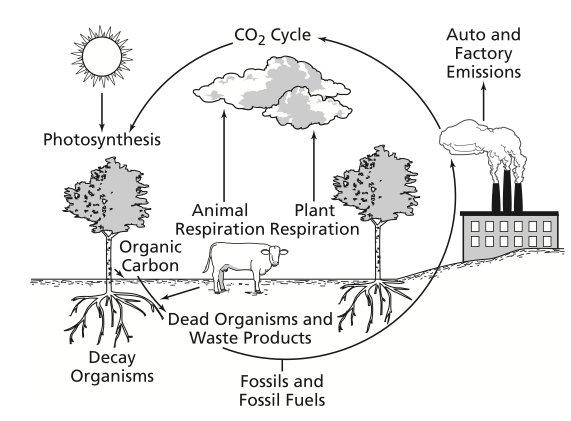
- The cycle shown is the cycle.
- The process that makes fossil fuels is called .
Over the last 100 years, humans have had a huge effect on this cycle. Give one example.
Burning fossil fuels puts excess CO2 into the atmosphere, which makes the planet warm up (or: clearing forests reduces photosynthesis).
Write the balanced equation for photosynthesis.
6CO2 + 6H2O → C6H12O6 + 6O2 (using light energy and chlorophyll)
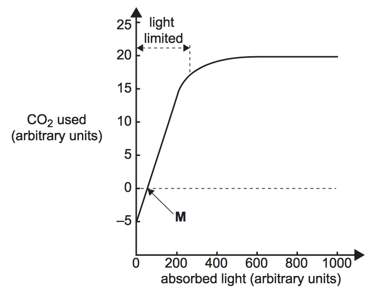
The graph shows the net rate of CO2 used by a plant as the light intensity increases. Describe the graph in terms of the variables shown.
As the absorbed light increases, the net CO2 used increases, until it levels off at high light.
Outline what is occurring at point M in terms of photosynthesis and respiration.
The rate of photosynthesis (CO2 used) equals the rate of respiration (CO2 produced), so the net CO2 used is zero.
Explain why the line becomes horizontal from about 600 units of absorbed light.
Light is no longer the limiting factor: other limiting factors (such as CO2 concentration or temperature) now limit the rate of photosynthesis.
Composting turns unwanted plant material, food scraps and animal waste into fertiliser. Yeast cells in compost respire aerobically when there is enough oxygen, but use an alternative pathway when oxygen levels drop.
- The alternative pathway is .
- Its products are carbon dioxide and .
Chemistry: Question 3
Balance the equations.
Ca(OH)2 + 2HCl → CaCl2 + 2H2O
Pb(NO3)2 + 2NaI → PbI2 + 2NaNO3
C2H6 + O2 → CO2 + H2O
Write balanced chemical equations, with states, for: (i) sodium chloride solution added to potassium iodide solution, producing solutions of sodium iodide and potassium chloride; (ii) lithium sulfate solution mixed with calcium nitrate solution, so that calcium sulfate precipitates in a lithium nitrate solution.
(i) NaCl(aq) + KI(aq) → NaI(aq) + KCl(aq)
(ii) Li2SO4(aq) + Ca(NO3)2(aq) → CaSO4(s) + 2LiNO3(aq)
Question 4
An isotope of potassium, 3919K, was identified in an experiment.
Protons in a potassium atom:
Electrons in a K+ ion:
Potassium is in group 1, called the .
Electron arrangement of a potassium atom:
Write the formulas of these compounds.
Lithium chloride:
Calcium phosphate:
Copper(II) hydroxide:
Ammonium carbonate:
Question 6
Bromine, the 44th most abundant element in the Earth's crust, is reactive and found mainly in compounds in sea water. It has 35 protons.
- Bromine is a .
- A Br− ion has electrons.
Bromine has two natural isotopes: bromine-79 (50%) and bromine-81 (50%). Calculate the relative atomic mass of bromine.
RAM = (79 × 0.5) + (81 × 0.5) = 80.
Question 7
In the "Law of Conservation of Mass" experiment, a clear solution of potassium iodide was placed in a conical flask, and a test tube of clear lead nitrate solution was placed inside it. The flask was sealed and the two solutions were then mixed. A precipitate formed.
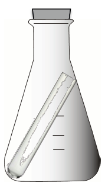
What was the evidence that a chemical reaction had taken place?
A precipitate formed (a colour change, to yellow).
In another demonstration, steel wool was burned in an evaporating dish, and the steel wool and dish were weighed before and after. If the mass changed, does this mean the law of conservation of mass is incorrect? Explain.
No, the law is not incorrect (1 mark). The dish is not a closed system, so gases can move in or out: any mass change is due to gas entering or leaving, not mass being created or destroyed (1 mark).
Coordination and control: Question 8
Organisms can be unicellular or multicellular. A cell's surface area to volume ratio can be vital to its survival. Compare a multicellular mouse with a unicellular amoeba.
Why is the amoeba not the same size as the mouse?
As the amoeba gets larger, its SA:V ratio decreases, so there would not be enough surface area to exchange enough materials between the inside and outside of the cell to sustain life.
Identify one adaptation a mouse has to compensate for its smaller SA:V ratio compared with an amoeba.
Any adaptation that increases surface area for exchange of nutrients or heat, or a system for exchange, e.g. lungs (a gas exchange system), a circulatory system, a folded small intestine, or a higher metabolism to produce more energy and heat.
An amoeba carries out all 7 characteristics of living things inside one cell. What are the characteristics that all living things must have?
Movement, respiration, sensitivity, growth, reproduction, excretion and nutrition (MRS GREN).
Question 10
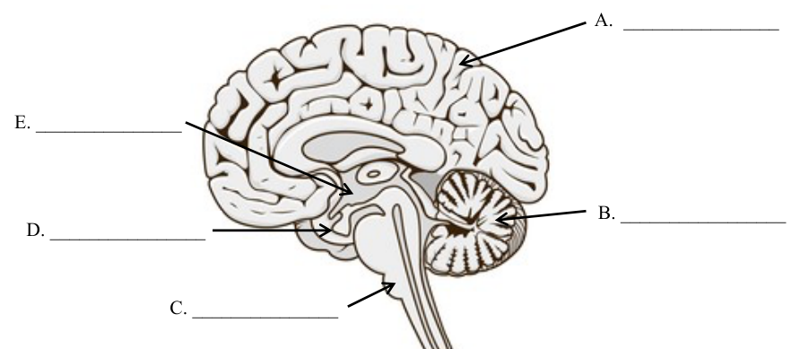
Label the structures of the brain.
Label A:
Label B:
Label C:
Label D:
Label E:
The nervous system is made up of the central nervous system and the peripheral nervous system. What are the 3 main types of neurons?
Sensory neuron, interneuron (relay neuron) and motor neuron.
Question 11
In humans, the blood glucose concentration stays between 3.9 and 5.6 mmol/L due to homeostatic mechanisms.
Define homeostasis, and give one other condition controlled by homeostasis in humans.
Homeostasis is the maintenance of the internal environment within narrow limits, despite changes in the external environment (1 mark). Another condition: body temperature, pH or water balance (osmoregulation) (1 mark).
Ben had a Mars Bar for morning tea, which made his blood glucose rise above 5.6 mmol/L. Outline the steps that bring it back to normal.
- Glucose is absorbed in the small intestine, so the blood glucose concentration increases (1 mark).
- Beta cells in the pancreas detect the increase and release the hormone insulin (1 mark).
- Insulin travels in the bloodstream to the liver, where it stimulates liver cells to take up glucose and store it as glycogen (1 mark).
- The blood glucose level falls back to normal (1 mark).
Question 12
In a practical, you investigated the effect of alcohol on temperature loss from cotton wool. One cotton wool ball was moistened with alcohol and another was not. They were attached to thermometers and placed in front of a fan, and the temperature was recorded over time.
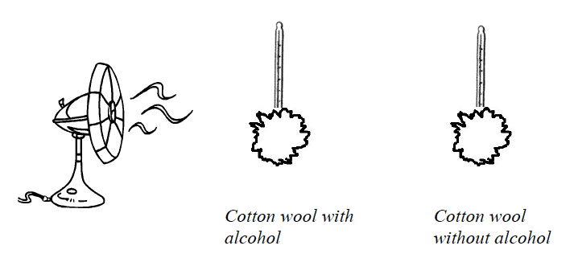
What is the independent variable?
Whether alcohol is present or absent on the cotton wool.
The alcohol modelled the action of sweat on skin. Explain the effect of sweat on heat loss from the body.
When sweat is released onto the skin, heat from the blood near the skin's surface warms the sweat (1 mark). The sweat evaporates, transferring heat from the body to the air, so the body loses heat (1 mark).